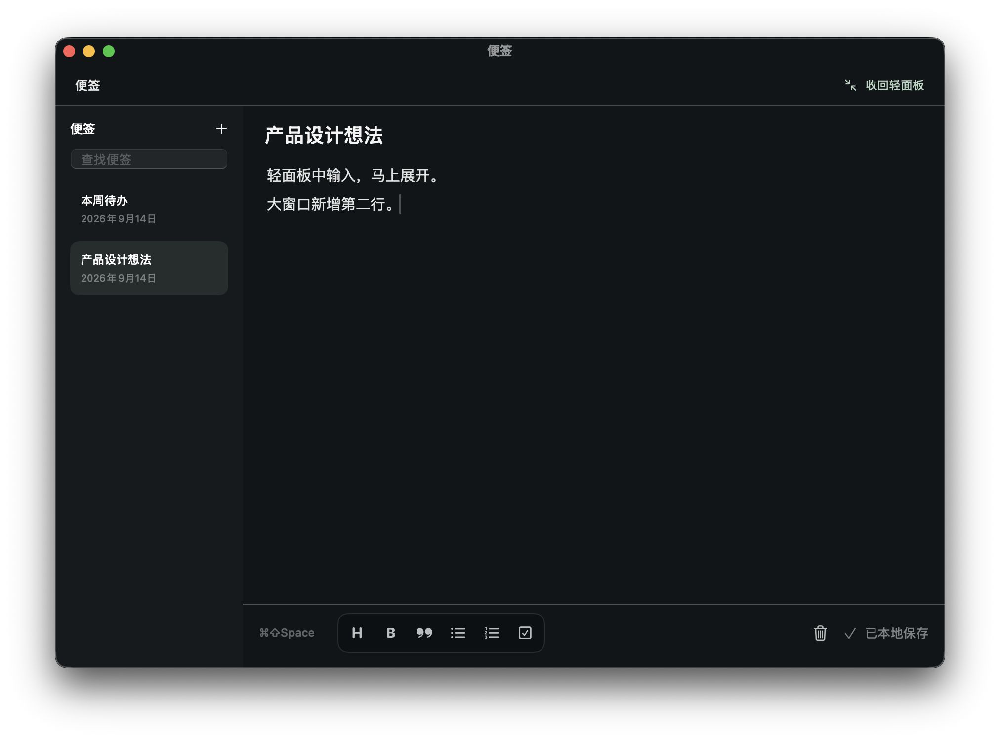

HALOFOLD / 原生实现 · 2026-09-14
随手处理，需要时再展开。
更新：独立窗口已改为与灵动岛连接的工作台。查看最新修正与实际截图
这是实际运行的 macOS 界面截图，使用独立演示数据。当前页用于验收，交互设计稿在这里。
收起：只留重要状态优先显示待处理数量；没有待处理事项时显示运行状态。专注期间右侧显示倒计时，其他完整统计仍可在活动页查看。
便签窗口 · 展开编辑
窗口可调整大小；左侧按标题查找便签，右侧编辑。删除位于底部保存状态旁，支持撤销。

使用“收回轻面板”，或关闭窗口，都能回到小面板，刚才的内容会同步显示。
| 验收项目 | 结果 |
|---|
| 快速输入 → 立即展开 | 通过：文字带入大窗口，焦点进入正文。 |
| 大窗口新增一行 → 立即收回 | 通过：小面板立即显示完整两行内容。 |
| 删除便签 → 撤销 | 通过：恢复原标题和正文。 |
| 查找便签 | 通过：按标题筛选列表。 |
| 关闭编辑窗口 | 通过：返回轻面板，内容保留。 |
| 原有紧凑便签入口 | 通过：工具栏、保存状态与展开按钮完整显示。 |
| 自动测试 | 完整配置 73 项通过；正式功能配置 70 项通过。 |
| 本地应用包 | Release 构建、本地签名及签名验证通过。 |